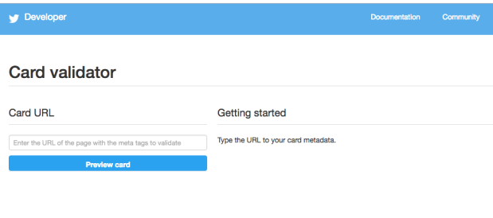

Cómo eliminar la cache de Twitter
Si alguna vez has compartido una url en twitter y te has dado cuenta a posteriori de la existencia de algún error en el mismo, bien en el titulo o en el contenido, te darás cuenta que aunque lo corrijas, al estar cacheado en Twitter, se seguirá compartiendo con el mismo error. Por lo que para darle solución a ese situación lo que tenemos que hacer es entrar en el validador de Twitter Cards –> https://cards-dev.twitter.com/validator y meter la URL que nos interesa y darle a actualizar, con esto quedará descacheada y ya podremos compartirla sin ningún error.
